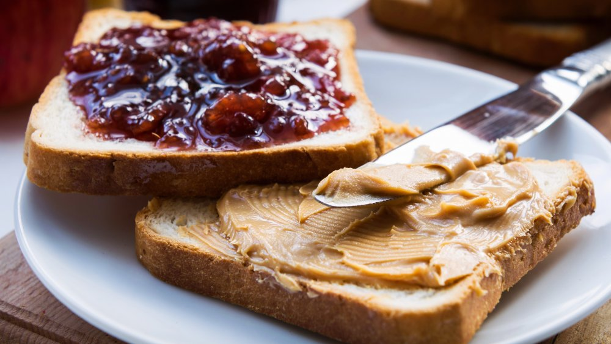

Peanut Butter and Grape Puree on Wheat

Description
Amazingly simple and quick peanunt butter and jelly sandwich that brings back childhood Memories!
Ingredients
- 2 slices of sandwich bread (any variety of your choosing)
- 1 tablespoon Peanut Butter
- ½ tablespoon Grape Jelly or Jam
Steps
- Spread Peanut butter on one slice of bread and jelly on the other slice.
- Place the slices together with the peanunt butter and jelly sides facing each other and Enjoy!